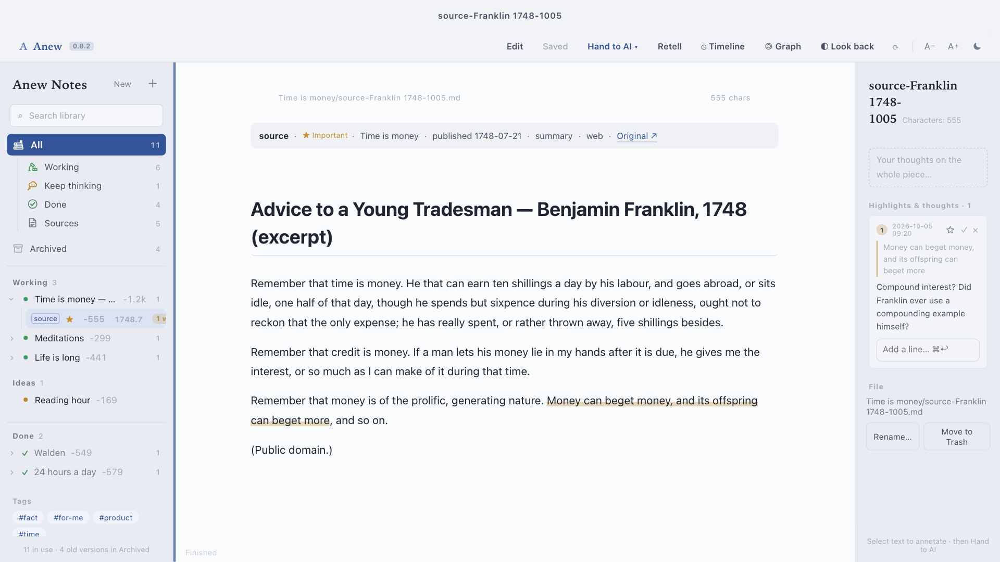
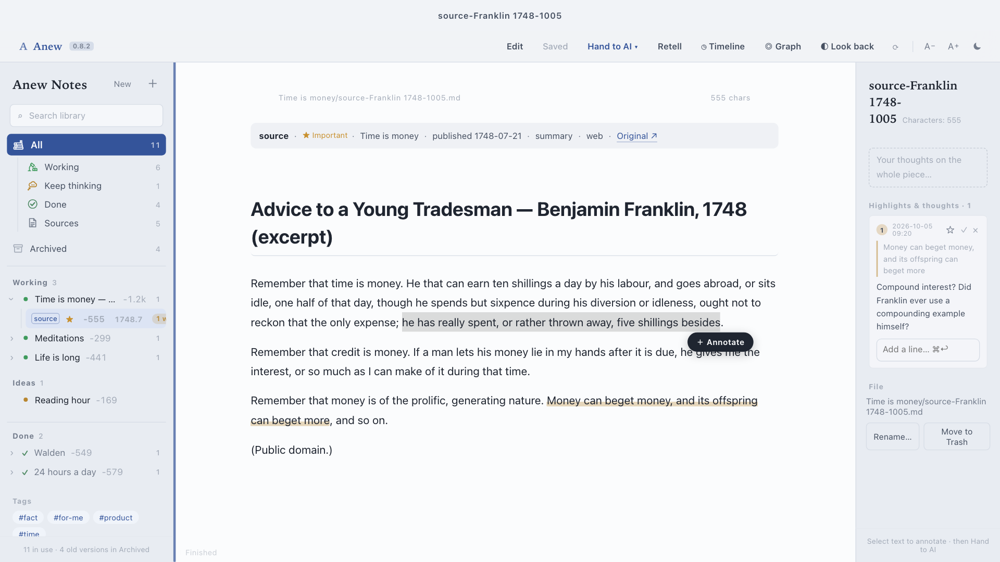
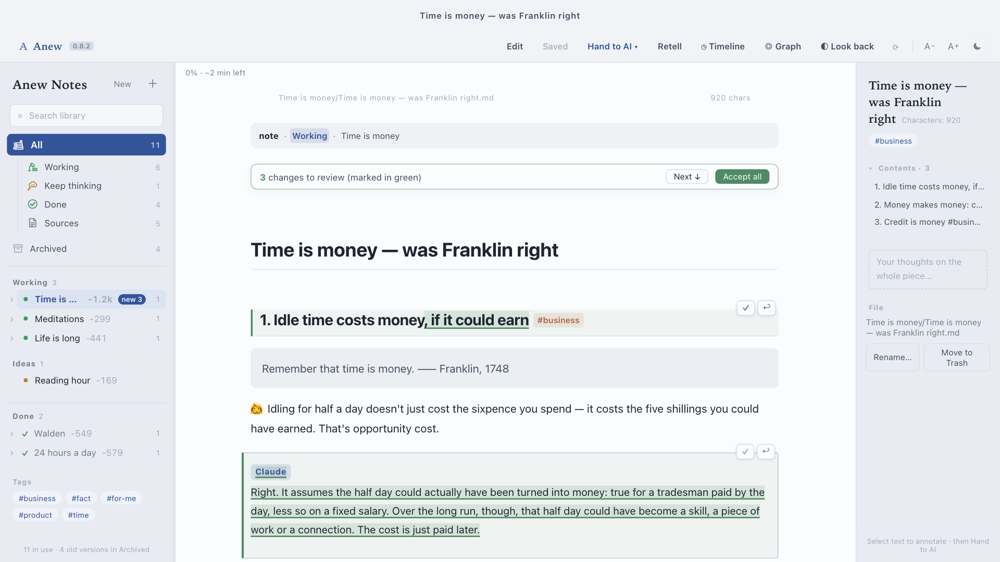
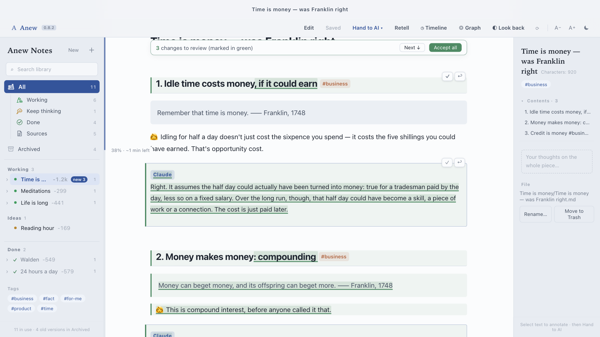
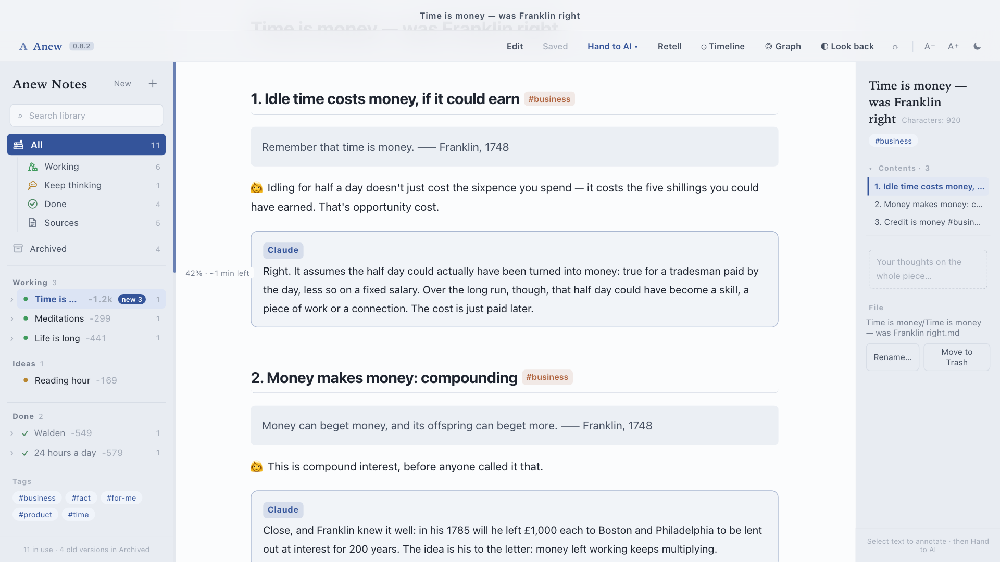
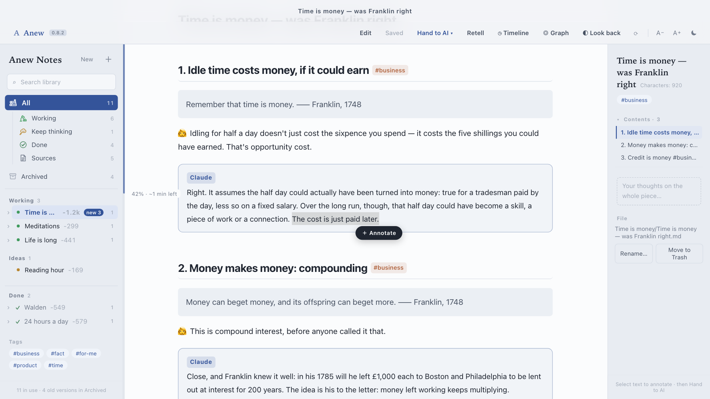
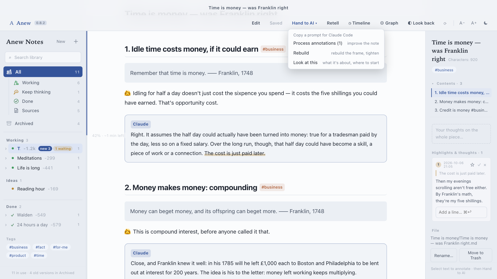
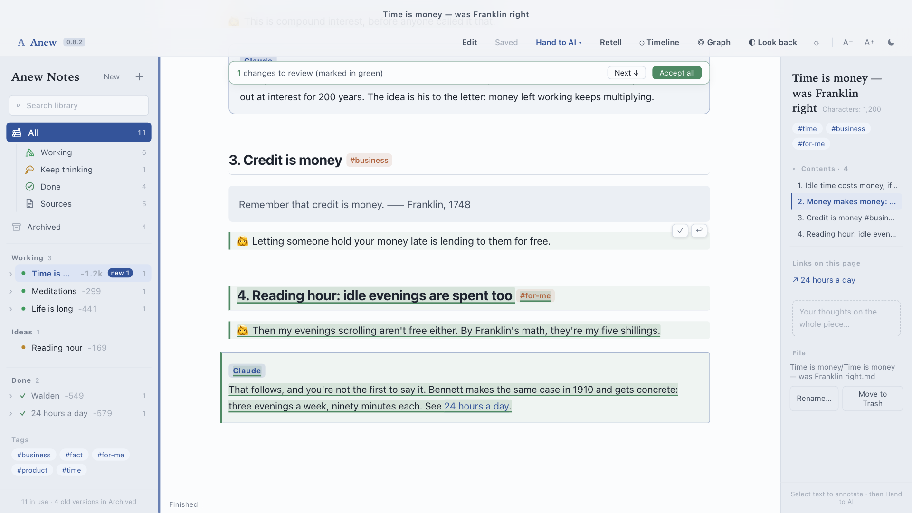
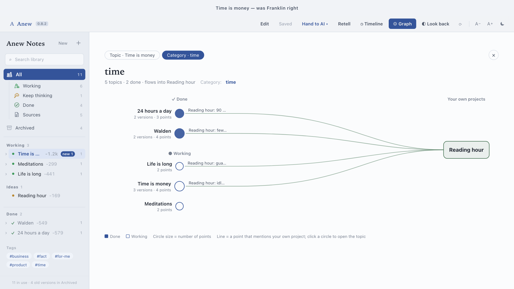

Read. Argue in the margins.
> Process annotations: …/source-Franklin 1748-1005.md (2 waiting)
⏺ Saved the old note as old-process annotations-1005.md
⏺ Checked both annotations, added 2 cards
⏺ Rewrote the note: now version 2
Hand it to Claude.


Claude edits the note itself.
Your words stay yours. Its checks go in cards.



Round 2Talk back to Claude, in the note
> Process annotations: …/Time is money — was Franklin right.md (1 waiting)
⏺ Saved v2 as old-process annotations-1006.md
⏺ Added section 4: your words under 👩, a card citing Bennett, 1910
⏺ Now version 3
Disagree? Annotate Claude's card.
Hand it back.

Your reply becomes part of the note.
Every round is a new version.

Your thinking, as a graph.
Anew
Read with Claude in the margins.